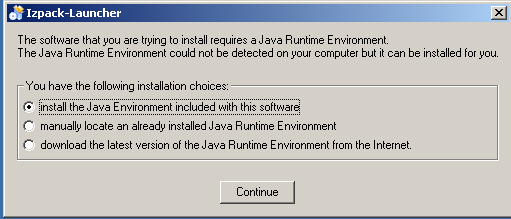
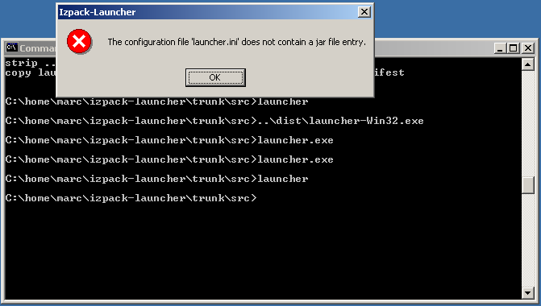
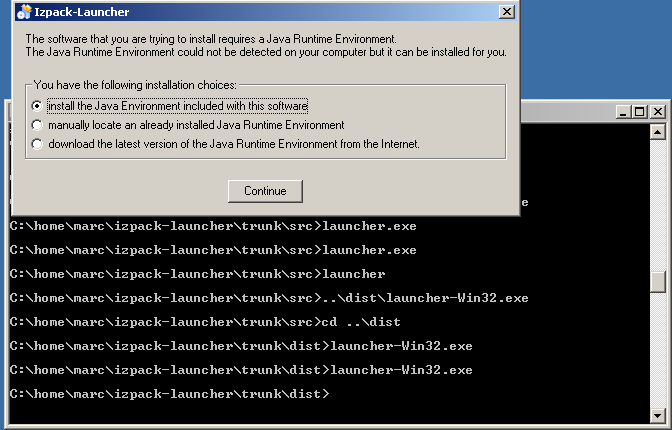

This document endeavors to describe how to compile a Windows executable version of the Izpack launcher using open source tools and Windows as a build environment.
1. Introduction
2. Startup
3. Prerequisites
4. Getting Sources
5. Installation
6. Preparation
7. Perform complete compilation of the Izpack-Launcher - Distribution
8. Test
9. Customization
10. Shutdown
Izpack-launcher is a native Executable, that searches for, installs if not found and starts a Java Runtime Environment (JRE) together with a customers "IzPack Java - setup.jar". If Java is already installed then it just starts the setup.jar.
IzPack-launcher can be compiled and run on a number of OSs. But it will be of most benefit to Windows users, who lack the ability of being able to effectively accomplish the above task using good old unix scripting tools.
Building of a self-extracting version is also possible. This uses a technique which is nicely illustrated by Julien in a separate flash "screen-cam" demonstration or alternatively a pdf.
For more information on how to use, embed and build a IzPack Setup with the IzPack-Launcher, read the manuals which come with IzPack and IzPack Launcher. A quickstart tutorial pdf is also provided and is recommended for beginners. There is another "howto compile" in the WIKI, which describes the compile and build based on MSVC++6.0 and Open Watcom.
Finally, Imho: IzPack-Launcher is not the name that describes this Executable exactly. JRE_FindAndStartWithAny(Gui)Jar.exe would be a more precise name. ;-)
IzPack launcher is build and based on WxWindows/wxWidgets, a native and platform independent GUI-Development library similar to Qt and Gtk. But it has more liberal licensing terms then Qt (even for win32 binaries as of the current Qt4 release). That is why you will need (in addition to a C++ Compiler) the WxWindow/wxWidgets distribution. I will describe how to get and prebuild this GUI-library in the Prerequisites and the Preparation Section.
To use IzPack-Launcher, you will also need your application as an "IzPack-Setup Jar-File" executable jar. For the impatient you can use the IzPack's Setup-Jar from http://www.izforge.com/izpack, for testing purposes.
To start with, you need a C++ Compiler. The easiest way is to download and install DevCPP from http://www.bloodshed.net. This is a complete IDE and comes with all tools needed to compile wxWindows/wxWidgets and IzPack-launcher.
The current release of DevCPP is 4.9.9.2 (as of 19th August 2005). Unfortunately the make utility of this suite has a bug, so you have to do 3 very simple edit/copy steps manually. I will describe this in the preparation chapter. Note: if this bug gets fixed in a future release, you might be lucky and not have to fix it yourself!
After installation, you have to add the "bin" - folder of DevCPP to your PATH-Environment variable. i.e. set PATH=%PATH%;C:\devcpp\bin
The next thing you have to do is build IzPack-launcher, so checkout the sources from the
svn-tree, if you don't have the sources already.
As registered IzPack developer, you can checkout using:
svn checkout svn+ssh://developername@svn.berlios.de/svnroot/repos/izpack/izpack-launcher/trunk
while as anonymous user you have to use:
svn checkout svn://svn.berlios.de/izpack/izpack-launcher/trunk
Then, you have to download the wxWindows/wxWidgets sources for your target platform. As this is all about Windows - go download the old version 2.4.2 (otherwise you will be faced with more build bugs) wxMSW-2.4.2-setup.zip
from http://www.sourceforge.net . Yes, this is maybe a todo for us - at least we have to adapt the makefiles.
Once you have done your downloading, you are ready to install. I have setup DevCPP with the default options and the default install path: c:\dev-cpp. wxWindows was also installed typically, except I choosed another install path: c:\wxw242.
You can read the documentation on how to build the wxWindows library, or alternatively follow the required steps below to compile with DevCpp.
A) In order to compile the wxWindows/wxWidget Libraries, you have to set some environment variables. You can set these globally with Settings --> Control panel -> System ->Advanced -> Environment Variables or only in the current Console:
i) Adjust the environment
variable WXWIN to your wxWindows/wxWidgets installation-
base path:
> set WXWIN=C:\wxw242
ii) Don't forget to add the "bin"
subdirectory of DevCPP to your PATH environment variable:
> set PATH=%PATH%;C:\dev-cpp\bin
iii) Now open a new console (cmd.exe), change to the wxWindows basedir typing:
> cd /d C:\wxw242\src\msw
iv) and enter:
> make -f makefile.g95 clean
to cleanup previous created binaries. This is not required, for the first time.
v) now enter:
> make -f makefile.g95 FINAL=1
NOTE: Unfortunately,
there is a tiny bug in the make tool or copy-tool (as I sayed above). (The
destination option is not recognized correctly),
So you will get a Error message like:
mkdir ..\..\lib\msw
mkdir ..\..\lib\msw\wx
cp ../../include/wx/msw/setup.h ../../lib/msw/wx/setup.h
process_begin: CreateProcess((null), cp ../../include/wx/msw/setup.h ../../lib/m
sw/wx/setup.h, ...) failed.
make (e=2): The system cannot find the file specified.
make: *** [../../lib/msw/wx/setup.h] Error 2
or:
cp ../common/dosyacc.c ../common/y_tab.c
process_begin: CreateProcess((null), cp ../common/dosyacc.c ../common/y_tab.c, .
..) failed.
make (e=2): The system cannot find the file specified.
make: *** [../../src/common/y_tab.c] Error 2
However there is a simple Workaround by doing the three following easy things ;-) :
Just copy the file manually: Enter in the case above:
Note: Use backslash instead of slash.
> copy ..\..\include\wx\msw\setup.h ..\..\lib\msw\wx\setup.hcomment out line 546: ( $(COPY) $(WXDIR)/include/wx/msw/setup.h $(subst $(BACKSLASH),/,$@) ) in the makefile.g95 and continue the build, by reenter > make -f makefile.g95 FINAL=1
> copy ..\common\dosyacc.c ..\common\y_tab.c
and continue the build, by enter
> make -f makefile.g95 FINAL=1
> copy ..\common\doslex.c ..\common\lex_yy.c
again and finish the wxWin-build, by (last) re-enter
> make -f makefile.g95 FINAL=1
The wxwindows libs and all other wxw stuff should now compiled successfully.
OK. You are now able to compile the IzPack-Launcher Exe.
( First ensure, that the WXWIN-Environment variable is set. Otherwise you get an error like if you calls the make tool direct in the console.:
Makefile.mingw:10: /src/makeprog.g95: No such file or directory
make: *** No rule to make target `/src/makeprog.g95'. Stop.)
Otherwise if you use the new provided compile.bat (recommended) you gets an error message, that WXWIN is not defined yet.
If all is set up correctly, you can simply compile by start compile.bat file.
C:\izpacklauncher>compile.bat
Alternatively you can compile by hand using the following command:
C:\izpacklauncher>make -f Makefile.mingw installHere is just the output:
C:\home\marc\izpack-launcher\trunk\src>compile.bat
g++ -Wl,--subsystem,windows -mwindows -LC:\wxw242/lib -LC:\wxw242/contrib/lib
-o launcher.exe launcher.o failuredialog.o launcher_resources.o C:\wxw242/lib/
libwxmsw.a -lregex -lpng -ljpeg -lzlib -ltiff -lstdc++ -lgcc -lodbc32 -lwsock32
-lwinspool -lwinmm -lshell32 -lcomctl32 -lctl3d32 -lodbc32 -ladvapi32 -lodbc32 -
lwsock32 -lopengl32 -lglu32 -lole32 -loleaut32 -luuid
if not exist ..\dist\fr mkdir ..\dist\fr
if not exist ..\dist\de mkdir ..\dist\de
if not exist ..\dist\da mkdir ..\dist\da
if not exist ..\dist\pt-BR mkdir ..\dist\pt-BR
if not exist ..\dist\es mkdir ..\dist\es
if not exist ..\dist\it mkdir ..\dist\it
if not exist ..\dist\nl mkdir ..\dist\nl
copy fr\launcher.mo ..\dist\fr
1 file(s) copied.
copy es\launcher.mo ..\dist\es
1 file(s) copied.
copy de\launcher.mo ..\dist\de
1 file(s) copied.
copy da\launcher.mo ..\dist\da
1 file(s) copied.
copy pt-BR\launcher.mo ..\dist\pt-BR
1 file(s) copied.
copy it\launcher.mo ..\dist\it
1 file(s) copied.
copy nl\launcher.mo ..\dist\nl
1 file(s) copied.
copy launcher.exe ..\dist\launcher-Win32.exe
1 file(s) copied.
strip ../dist/launcher-Win32.exe
copy launcher.exe.manifest ..\dist\launcher-Win32.exe.manifest
1 file(s) copied.
Congratulation! You have now a IzPack launcher.exe in the current folder!
You can test it by enter: "launcher" to test the developer version.
You will get one of the following screen shots depend on the content of the launcher.ini in the current folder.
If the file launcher.ini contains a valid "Jar = YourInstall.jar" - line, you will get:

Otherwise:

Alternatively you can enter ..\dist\launcher-Win32.exe to test the distribution version.
The result should be similar to the developer version:

But the file size of this executable is about 1MB smaller than the developers one. At least on my machine ;-)
If you want to test the other languages you have to change your locale in the regional options dialog launched from the control panel. For example for german:
Now, that's all folks.
Thanks to Julien Ponge, all developers, members and even the users of IzPack. Thanks goes also still to VMware, which made this doc possible, since I work with Linux and run any Win32-OS only in a VMware-sandbox. ;-)
Not least thanks to Nick Cunnah for review this doc.
This document was initially written at 2005-05-19 by Marc Eppelmann / Oldenburg(Oldb) / Germany
This comes without any warranty. Suggestions and Feedback are always welcome. Send these to marc.eppelmann_at_gmx.de
The License is the same as for the entire software. See LICENSE, which comes with the distribution.
$Id: howto.html,v 1.1 2005/07/25 19:53:58 marc Exp $